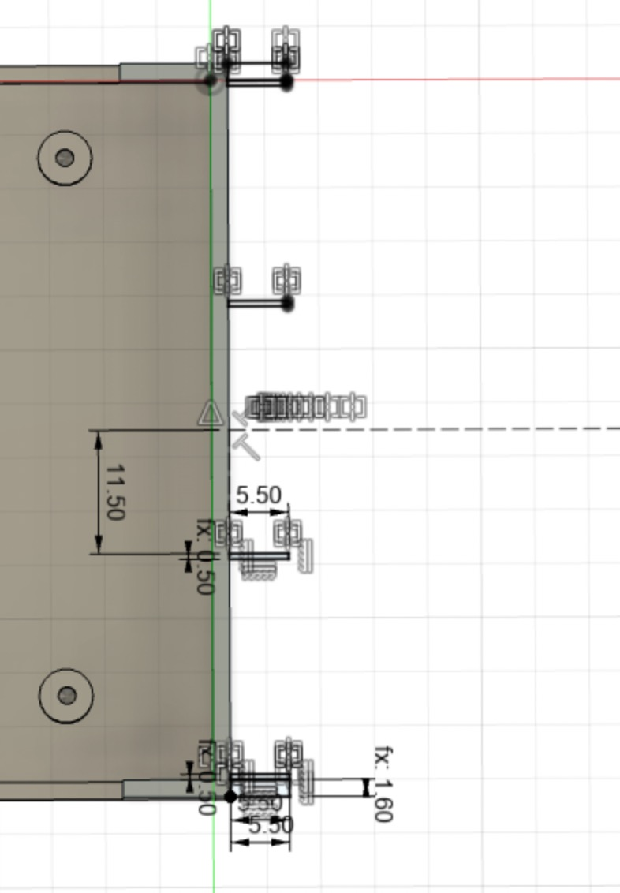
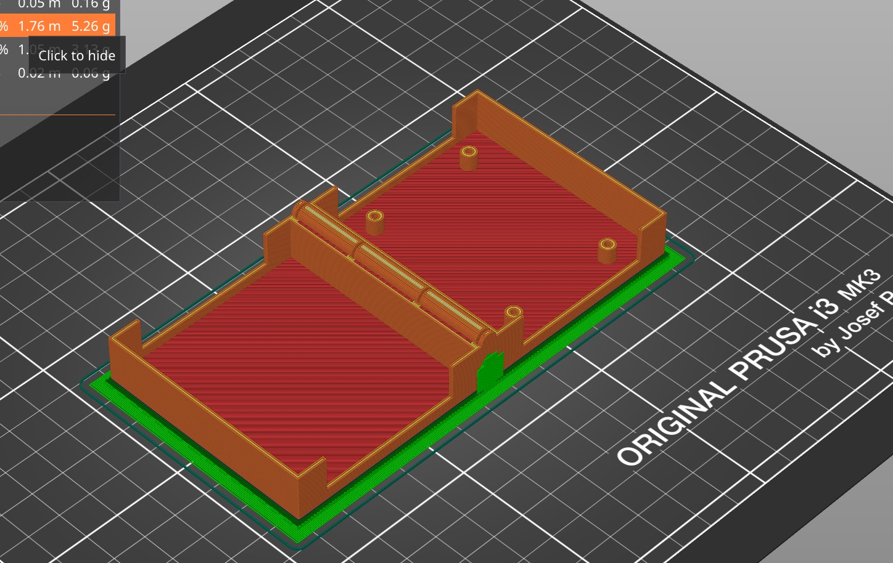

This is the process page for the design, fabrication, and coding of the Digilogue synthesizer glove.
~~~~~
We'll start simple: an Arduino Micro, a breadboard, and a flex sensor with a 10k resistor.
Let's think about how we should scale it to five flex sensors and the ability to place it in a compact enclosure on the top of the hand. These 10k resistors will take up significant space on a PCB. However, if we integrate them within the flex sensor wiring (thanks for the suggestion Suvin!) the flex sensors can be wired directly into the analog input pins.
Let's do that now.
Heat shrink applied.

Confirmed working.

Let's look at some sample code for getting a basic flex sensor readout:
//Constants:
const int ledPin = 3; //pin 3 has PWM funtion
const int flexPin = A0; //pin A0 to read analog input
//Variables:
int value; //save analog value
void setup(){
pinMode(ledPin, OUTPUT); //Set pin 3 as 'output'
Serial.begin(9600); //Begin serial communication
}
void loop(){
value = analogRead(flexPin); //Read and save analog value from potentiometer
Serial.println(value); //Print value
value = map(value, 700, 900, 0, 255);//Map value 0-1023 to 0-255 (PWM)
analogWrite(ledPin, value); //Send PWM value to led
delay(100); //Small delay
}
Source: https://www.instructables.com/How-to-use-a-Flex-Sensor-Arduino-Tutorial/calibrated
Here's the serial output from the flex sensor.
Next, we'll connect an RGB LED strip with closely spaced LEDs, suitable for mounting on a glove.
Part number:
BTF-LIGHTING WS2812B RGB 5050SMD Individual Addressable 3.3FT 144

Here's the sample code used to get it operational:
#include
#define LED_PIN 5
#define NUM_LEDS 200
#define BRIGHTNESS 64
#define LED_TYPE WS2811
#define COLOR_ORDER GRB
CRGB leds[NUM_LEDS];
#define UPDATES_PER_SECOND 100
// This example shows several ways to set up and use 'palettes' of colors
// with FastLED.
//
// These compact palettes provide an easy way to re-colorize your
// animation on the fly, quickly, easily, and with low overhead.
//
// USING palettes is MUCH simpler in practice than in theory, so first just
// run this sketch, and watch the pretty lights as you then read through
// the code. Although this sketch has eight (or more) different color schemes,
// the entire sketch compiles down to about 6.5K on AVR.
//
// FastLED provides a few pre-configured color palettes, and makes it
// extremely easy to make up your own color schemes with palettes.
//
// Some notes on the more abstract 'theory and practice' of
// FastLED compact palettes are at the bottom of this file.
CRGBPalette16 currentPalette;
TBlendType currentBlending;
extern CRGBPalette16 myRedWhiteBluePalette;
extern const TProgmemPalette16 myRedWhiteBluePalette_p PROGMEM;
void setup() {
delay( 3000 ); // power-up safety delay
FastLED.addLeds(leds, NUM_LEDS).setCorrection( TypicalLEDStrip );
FastLED.setBrightness( BRIGHTNESS );
currentPalette = RainbowColors_p;
currentBlending = LINEARBLEND;
}
void loop()
{
ChangePalettePeriodically();
static uint8_t startIndex = 0;
startIndex = startIndex + 1; /* motion speed */
FillLEDsFromPaletteColors( startIndex);
FastLED.show();
FastLED.delay(1000 / UPDATES_PER_SECOND);
}
void FillLEDsFromPaletteColors( uint8_t colorIndex)
{
uint8_t brightness = 255;
for( int i = 0; i < NUM_LEDS; ++i) {
leds[i] = ColorFromPalette( currentPalette, colorIndex, brightness, currentBlending);
colorIndex += 3;
}
}
// There are several different palettes of colors demonstrated here.
//
// FastLED provides several 'preset' palettes: RainbowColors_p, RainbowStripeColors_p,
// OceanColors_p, CloudColors_p, LavaColors_p, ForestColors_p, and PartyColors_p.
//
// Additionally, you can manually define your own color palettes, or you can write
// code that creates color palettes on the fly. All are shown here.
void ChangePalettePeriodically()
{
uint8_t secondHand = (millis() / 1000) % 60;
static uint8_t lastSecond = 99;
if( lastSecond != secondHand) {
lastSecond = secondHand;
if( secondHand == 0) { currentPalette = RainbowColors_p; currentBlending = LINEARBLEND; }
if( secondHand == 10) { currentPalette = RainbowStripeColors_p; currentBlending = NOBLEND; }
if( secondHand == 15) { currentPalette = RainbowStripeColors_p; currentBlending = LINEARBLEND; }
if( secondHand == 20) { SetupPurpleAndGreenPalette(); currentBlending = LINEARBLEND; }
if( secondHand == 25) { SetupTotallyRandomPalette(); currentBlending = LINEARBLEND; }
if( secondHand == 30) { SetupBlackAndWhiteStripedPalette(); currentBlending = NOBLEND; }
if( secondHand == 35) { SetupBlackAndWhiteStripedPalette(); currentBlending = LINEARBLEND; }
if( secondHand == 40) { currentPalette = CloudColors_p; currentBlending = LINEARBLEND; }
if( secondHand == 45) { currentPalette = PartyColors_p; currentBlending = LINEARBLEND; }
if( secondHand == 50) { currentPalette = myRedWhiteBluePalette_p; currentBlending = NOBLEND; }
if( secondHand == 55) { currentPalette = myRedWhiteBluePalette_p; currentBlending = LINEARBLEND; }
}
}
// This function fills the palette with totally random colors.
void SetupTotallyRandomPalette()
{
for( int i = 0; i < 16; ++i) {
currentPalette[i] = CHSV( random8(), 255, random8());
}
}
// This function sets up a palette of black and white stripes,
// using code. Since the palette is effectively an array of
// sixteen CRGB colors, the various fill_* functions can be used
// to set them up.
void SetupBlackAndWhiteStripedPalette()
{
// 'black out' all 16 palette entries...
fill_solid( currentPalette, 16, CRGB::Black);
// and set every fourth one to white.
currentPalette[0] = CRGB::White;
currentPalette[4] = CRGB::White;
currentPalette[8] = CRGB::White;
currentPalette[12] = CRGB::White;
}
// This function sets up a palette of purple and green stripes.
void SetupPurpleAndGreenPalette()
{
CRGB purple = CHSV( HUE_PURPLE, 255, 255);
CRGB green = CHSV( HUE_GREEN, 255, 255);
CRGB black = CRGB::Black;
currentPalette = CRGBPalette16(
green, green, black, black,
purple, purple, black, black,
green, green, black, black,
purple, purple, black, black );
}
// This example shows how to set up a static color palette
// which is stored in PROGMEM (flash), which is almost always more
// plentiful than RAM. A static PROGMEM palette like this
// takes up 64 bytes of flash.
const TProgmemPalette16 myRedWhiteBluePalette_p PROGMEM =
{
CRGB::Red,
CRGB::Gray, // 'white' is too bright compared to red and blue
CRGB::Blue,
CRGB::Black,
CRGB::Red,
CRGB::Gray,
CRGB::Blue,
CRGB::Black,
CRGB::Red,
CRGB::Red,
CRGB::Gray,
CRGB::Gray,
CRGB::Blue,
CRGB::Blue,
CRGB::Black,
CRGB::Black
};
Source: https://randomnerdtutorials.com/guide-for-ws2812b-addressable-rgb-led-strip-with-arduino/

It works.
Next, we'll test the two speaker options and see if everything can be powered appropriately by the Arduino Micro with the high power one, as well as comparing audio output.
The large speakers are: MakerHawk 2pcs Ar duino Speaker 3 Watt 8 Ohm Single Cavity Mini Speaker.
The small speakers are: uxcell a15080600ux0275 Metal Shell Round Internal Magnet Speaker 2W 8 Ohm
Turns out the larger speakers are significantly louder and clearer sounding, so we'll use the MakerHawk ones.

Next, we'll look over the circuit layout for the fully loaded breadboard with five flex sensors, speaker, and LED strip.

Having a firm grasp of the layout is important, since we'll be moving the entire setup over to a protoboard/perfboard and soldering it together so that it can be placed in a portable housing for the Digilogue.

Soldering complete.

Nice and compact. We're using an ElectroCookie Solderable Breadboard PCB Board for Electronics Projects, Gold-Plated.

Everything still works. Phew.

Now we'll use a glove prototype to test out some mounting options for the flex sensors and better visualize the project.
The flex sensors can't be overstretched along their length, so they'll need to be partially free-floating, at least on the far end.
We'll use a placeholder glove and string to test out the setup before the proper glove comes in.

Knowing that the concept works, we'll move on to zip ties and double sided velcro (with superglue applied to the velcro backing for better hold).
Pictured below, the flex sensors have been affixed to the final glove ( Grip Boost DNA Football Gloves with Engineered Grip - XL). Velcro is attached to the base of the flex sensors, and also attached to the glove at the base of the fingers.


Here's a first test of the glove in action.
I wrote this code to test out the flex sensors and play a sound when each is flexed sufficiently:
#include "pitches.h"
//Constants:
const int flexPin0 = A0; // pinky
const int flexPin1 = A1; // ring
const int flexPin2 = A2; // middle
const int flexPin3 = A3; // index
const int flexPin4 = A4; // thumb
//Variables:
int value0; //save analog value
int value1;
int value2;
int value3;
int value4;
void setup(){
Serial.begin(9600); //Begin serial communication
pinMode(A0, INPUT_PULLUP); // set pull-up on analog pin 0
pinMode(A1, INPUT_PULLUP); // set pull-up on analog pin 0
pinMode(A2, INPUT_PULLUP); // set pull-up on analog pin 0
pinMode(A3, INPUT_PULLUP); // set pull-up on analog pin 0
pinMode(A4, INPUT_PULLUP); // set pull-up on analog pin 0
}
void loop(){
value0 = analogRead(flexPin0); //Read and save analog value from potentiometer
value1 = analogRead(flexPin1);
value2 = analogRead(flexPin2);
value3 = analogRead(flexPin3);
value4 = analogRead(flexPin4);
Serial.println(value0);
delay(100); //Small delay
if (value0 < 300){
tone(3, NOTE_C1, 500);
}
if (value1 < 300){
tone(3, NOTE_C2, 500);
}
if (value2 < 300){
tone(3, NOTE_C3, 500);
}
if (value3 < 300){
tone(3, NOTE_C4, 500);
}
if (value4 < 300){
tone(3, NOTE_C5, 500);
}
}
Use it with a separate pitches.h file below that is imported, using discrete notes:
#define NOTE_B0 31
#define NOTE_C1 33
#define NOTE_CS1 35
#define NOTE_D1 37
#define NOTE_DS1 39
#define NOTE_E1 41
#define NOTE_F1 44
#define NOTE_FS1 46
#define NOTE_G1 49
#define NOTE_GS1 52
#define NOTE_A1 55
#define NOTE_AS1 58
#define NOTE_B1 62
#define NOTE_C2 65
#define NOTE_CS2 69
#define NOTE_D2 73
#define NOTE_DS2 78
#define NOTE_E2 82
#define NOTE_F2 87
#define NOTE_FS2 93
#define NOTE_G2 98
#define NOTE_GS2 104
#define NOTE_A2 110
#define NOTE_AS2 117
#define NOTE_B2 123
#define NOTE_C3 131
#define NOTE_CS3 139
#define NOTE_D3 147
#define NOTE_DS3 156
#define NOTE_E3 165
#define NOTE_F3 175
#define NOTE_FS3 185
#define NOTE_G3 196
#define NOTE_GS3 208
#define NOTE_A3 220
#define NOTE_AS3 233
#define NOTE_B3 247
#define NOTE_C4 262
#define NOTE_CS4 277
#define NOTE_D4 294
#define NOTE_DS4 311
#define NOTE_E4 330
#define NOTE_F4 349
#define NOTE_FS4 370
#define NOTE_G4 392
#define NOTE_GS4 415
#define NOTE_A4 440
#define NOTE_AS4 466
#define NOTE_B4 494
#define NOTE_C5 523
#define NOTE_CS5 554
#define NOTE_D5 587
#define NOTE_DS5 622
#define NOTE_E5 659
#define NOTE_F5 698
#define NOTE_FS5 740
#define NOTE_G5 784
#define NOTE_GS5 831
#define NOTE_A5 880
#define NOTE_AS5 932
#define NOTE_B5 988
#define NOTE_C6 1047
#define NOTE_CS6 1109
#define NOTE_D6 1175
#define NOTE_DS6 1245
#define NOTE_E6 1319
#define NOTE_F6 1397
#define NOTE_FS6 1480
#define NOTE_G6 1568
#define NOTE_GS6 1661
#define NOTE_A6 1760
#define NOTE_AS6 1865
#define NOTE_B6 1976
#define NOTE_C7 2093
#define NOTE_CS7 2217
#define NOTE_D7 2349
#define NOTE_DS7 2489
#define NOTE_E7 2637
#define NOTE_F7 2794
#define NOTE_FS7 2960
#define NOTE_G7 3136
#define NOTE_GS7 3322
#define NOTE_A7 3520
#define NOTE_AS7 3729
#define NOTE_B7 3951
#define NOTE_C8 4186
#define NOTE_CS8 4435
#define NOTE_D8 4699
#define NOTE_DS8 4978
#define END -1
Next, we'll attach the LED strips to the glove. As with the flex sensors, we'll superglue velcro strips to the base of each LED strip. The LED strips have been cut to approximately 17 LEDs each to fit the length of each finger.

Before attaching to the glove, we'll need to solder wires onto each end of each LED strip so that they can be reconnected after placement in separate positions (at each finger).

First one soldered.

Use clips to hold the LED strips and the wires in place for easier soldering.

We can see that the connection points are very small. They're easy to mis-solder, so be careful and ensure you don't bridge connections, burn out the LED from the head of the soldering iron, or fail to secure the wire properly.
Two complete. Hot glue has been applied in some instances to help keep everything secure, though it can also make it easier to break off.

After a substantial amount of practice soldering, the job is done and everything is securely connected.

~~~Case Fabrication~~~
Let's design and fabricate a case for the Arduino and protoboard, in dimensions that will fit the components and fit conveniently on the glove.
Protoboard:
58.25 mm length
51.72 mm width
8.02mm from long (length) edge to center of riser hole
4.85mm from short (width) edge to center of riser hole
1.65mm depth of protoboard
6.65mm depth from top of protoboard to arduino pins underneath
Sketching out the case with risers:


Case height, 26mm with 1.5mm thickness
Extrude 26mm and shell 1.6mm outside
Split bodies.
M2 screw holes.
Adding text for embossing. However, the font downloaded is OTF rather than TTF, and Fusion 360 refuses to work with OTF fonts for extrusion or embossing. Fortunately, converting the font to TTF using a font converter works.
Font:
https://www.fontspace.com/eternal-font-f68627
Converted to Truetype with:
https://www.fontconverter.org/

Now let's sketch some rectangles and extrude -2mm to cut openings for cable management on the top and botton.


Wall thickness = 1.6mm
Box height = 29.2 mm
Gap = 0.5mm
Three circles using the wall thickness of 1.6mm and a 0.5 mm gap:
45 degree angles tangent to the outermost circle:


Mirrored slits to cut the hinge.

Extruded along the side.
Delete the top left, top right, and bottom middle sections.

Create an as-built joint to separate the sections and lie flat while connected..
Head over to Prusa Slicer.

Settings. Supports everywhere.

Print in action.

Finished piece.

Support material removed.


Unfortunately the hinge ended up being fused despite implementing a 0.5mm gap, so I recreated the case without the hinge, in two pieces, and printed them out.
The case was designed to take M2 screws, but the holes are a little small thanks to support material included in the print. I used a 0.078 drill bit to redrill the holes.
Now the M2 screws fit and we can mount the microcontroller protoboard to the case.
Securing with duct tape for now.
Supergluing velcro to the bottom of the case, and another patch of velcro superglued to the glove, for secure mounting.

Done.

Video overview of the completed build:
~~~~Fully Assembled~~~~~
It's a beauty. Where should we mount the speaker, though?

Using the velcro superglue method, we have a space in the corner for the speaker.

Have a look:
Beautiful.

Next, we'll test out tying the flex sensor data to the LED output:
~~~~Problems~~~~
Houston, we have a problem. A major one. The LED strips we used are three pin, which apparently prevents any other parallel processes from running on the Arduino while they're in use.
https://github.com/FastLED/FastLED/wiki/Interrupt-problems
As a result, we can't use the LED strips and run a synthesizer simultaneously on the Arduino. I also tested the LED strips with MIDI output and the LED strips blocked that as well.
To solve this, we probably need a second microcontroller, or to swap out the LED strips for four-pin ones. Realistically, we don't have time to do either by the deadline.